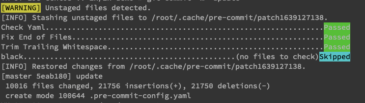

给代码上一份保险
程序员都知道代码规范很重要，但是代码规范太多了，很多时候也不一定能够全部记得住。而 git 中的 pre-commit 就是这样的一个神器，可以帮助你在 git commit 时，检查代码是不是没有问题。
这里需要区分一下，git 自带了一个 pre-commit，本文介绍的是 pre-commit 是一个 git pre-commit 的扩展框架，可以用来管理、开发多种语言插件。后面所说的 pre-commit 都是指这个框架。
pre-commit 官网：https://pre-commit.com/
1. 安装
pre-commit 插件是使用 Python 开发的，如果安装了 pip，直接使用 pip 安装：
$ pip install pre-commit
如果是 python 的项目，直接在 requirements.txt 依赖文件中添加：
pre-commit
在 MacOS 上可以使用 Homebrew 安装：
$ brew install pre-commit
在 Windows 上，可以使用 conda 安装：
$ conda install -c conda-forge pre-commit
查看是否安装成功：
$ pre-commit --version
pre-commit 2.16.0
2. 使用
这个工具的使用也很简单，只需要在项目的根目录底下创建 .pre-commit-config.yaml，然后在项目中填充下面的内容：
repos:
- repo: https://github.com/pre-commit/pre-commit-hooks
rev: v2.3.0
hooks:
- id: check-yaml
- id: end-of-file-fixer
- id: trailing-whitespace
- repo: https://github.com/psf/black
rev: 19.3b0
hooks:
- id: black
根标签是 repos，表示可以配置多个 repo，每一个 repo 表示一个 git 地址，表示使用的插件库，rev 表示使用的 tag 版本，hooks 表示你要使用插件库中的那些插件。
配置文件写完之后，然后执行 pre-commit install 安装插件：
$ pre-commit install
pre-commit installed at .git/hooks/pre-commit
而且每次配置有变更的时候，运行下面的命令：
pre-commit run --all-files
然后每次执行 git commit 时，git 都会调用这些插件，如果有插件执行失败，那些这次 commit 就会失败：

3. 自定义
pre-commit 提供了很多可以直接使用的插件，就在 https://github.com/pre-commit/pre-commit-hooks 这个仓库中。
但很多时候，这个仓库中的插件并不能完全满足要求，比如我现在日常工作中主要写 Go，那么就需要自定义一些插件。
在定义一个插件库时，需要在库的根目录创建一个 .pre-commit-hooks.yaml 文件，在这个文件中定义插件，插件完成后，就可以把库给其他人使用了。
在这个配置文件中，每一项配置如下：
- id: trailing-whitespace
name: Trim Trailing Whitespace
description: This hook trims trailing whitespace.
entry: trailing-whitespace-fixer
language: python
types: [text]
id 是插件的唯一标识，后续也是根据 id 来使用插件，name、description 是插件的名称和描述，自定义就行，extry 则表示具体插件的路径，一般是一段脚本文件。language 是编写这个插件所用的语言，目前支持 python、Go、node、bash 等诸多语言。types 是用来过滤目标文件，就是这个插件在那些文件上起作用。
还有很多其他的属性可以配置，具体可以参考：https://pre-commit.com/#new-hooks
新建的插件库还可以引用其他的插件库，只要创建配置文件引用其他的插件即可： .pre-commit-config.yaml 。
同时 pre-cpmmit 提供了一个 插件的搜索页面：https://pre-commit.com/hooks.html。可以在这里找到自己想要的插件，基本覆盖了主流的语言。
如果你想提交自己的插件，可以 fork 这个仓库：https://github.com/pre-commit/pre-commit.com，在仓库中添加自己的插件。
文 / Rayjun